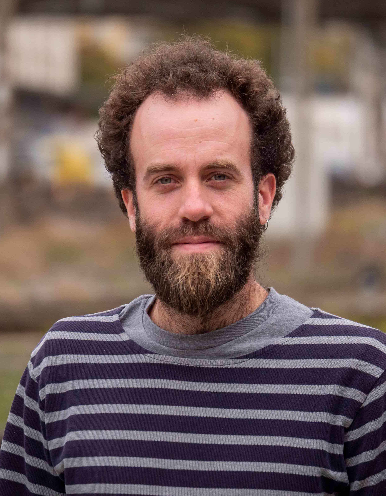
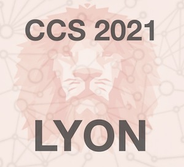
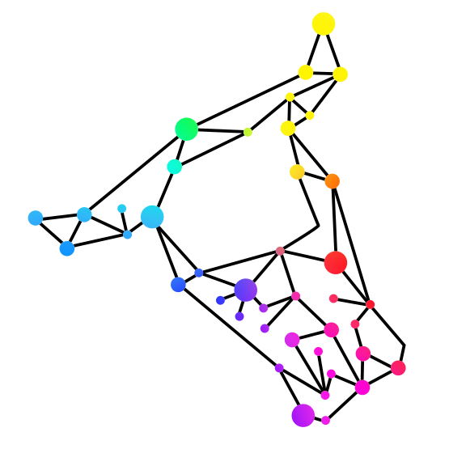

My research - Publications - Perspectives - CRM 2023 - JPhys Complexity - CCS 2021 - GeoCoW 2020 - MathPhys Seminar
About me

Since 2022: Assistant Professor at HES-SO, in Sion, Switzerland.
2020 - 2022: Postdoc at UCSB with Prof. F. Bullo.
2018 - 2020: Postdoc between HES-SO and ETHZ with Profs. P. Jacquod and F. Dörfler.
2019: Visiting postdoc at LANL with A. Lokhov and M. Vuffray.
2014 - 2018: PhD at HES-SO with Prof. P. Jacquod.
2014 - 2018:
After obtaining my Master's degree in Mathematics at the University of Geneva, I started a Ph.D. at the University of Applied Sciences of Western Switzerland (HES-SO) in Sion (CH), under supervision of
Prof. Philippe Jacquod.
Our interest in the stability of power grids led us to investigate the phenomenon of synchronization of newtorked agents, and in particular the conditions for the existence of multiple synchronous states in such a system.
2018 - 2020:
After graduating in May 2018, I stayed in Sion as a postdoc, with frequent interactions with
Prof. Florian Dörfler
at ETH Zurich.
Most of my work since then aims at a better understanding of the interplay between network structures and dynamics in systems of coupled dynamics agents.
In 2019, I had the opportunity to visit the
Center for Nonlinear Studies
(CNLS) at the Los Alamos National Laboratory (LANL).
There, my work with
Andrey Lokhov
and
Marc Vuffray
was directed towards the localization of disturbances in high-voltage power grids.
2020 - 2022:
In 2020, I have been granted a Postdoc.Mobility grant from the Swiss National Science Foundation.
This funding allowed me to work for two years in the group of
Prof. Francesco Bullo
at the University of California in Santa Barbara.
We managed to extend our understanding of multistability in networks of coupled oscillators to dissipative systems.
Since 2022:
Since August 2022, I am an Assistant Professor at the School of Engineering of the University of Applied Sciences of Western Switzerland (HES-SO), in Sion (CH).
I teach mathematics young engineers and pursue my research on the interplay between network structures and dynamical systems, with special focus on power grids.
In 2024, I joined the editorial board of IOP's Journal of Physics: Complexity.
In 2023, I have been invited to join the association
La Matrice,
whose purpose is to promote sciences and mathematics, through the prism of feminism and sustainability.
A more formal CV, including a list of publications, can be found
here.
Back to top
My research
Working on the stability of electrical networks with a mathematical background naturally led me to investigate the relation between dynamical systems and complex networks.
On one hand, it is clear that the network structure underlying a dynamical system influences its dynamics.
Determining the impact of some network structures on the dynamics of a system is still an ongoing field of research.
On the other hand, if the underlying network is unkown, observations of the system can give enough information to recover some characteristics of the network.
Such an approach aims at learning the underlying system from measurements data.
Currently, my research interests cover the two faces of this coin.
In particular, with
P. Jacquod,
T. Coletta,
and
M. Tyloo,
we showed how the number and size of cycles in a network of dynamical agents influence the number of equilibria of the whole system.
More recently, with
F. Bullo
and
S. Jafarpour,
we extended the analysis of networked coupled oscillators to systems with dissipative or lossy couplings.
Looking at the other side of the problem, with
P. Jacquod,
L. Pagnier,
and
M. Tyloo,
we proposed some methods to leverage the information included in measurements in order to recover the underlying network structure or the source of a disturbance in a dynamical system.
Back to top
Publications
A pdf version of my list of publication is available in
my CV.
All manuscripts are available on the
arXiv.
Preprints
-
R. Delabays and P. Jacquod,
Route to chaos and unified dynamical framework of multi-species ecosystems,
submitted (2025).
arXiv: 2503.16999
-
J. Niehues, R. Delabays, and F. Hellmann,
Small-signal stability of power systems with voltage droop,
submitted (2024).
arXiv: 2411.10832
-
L. Pagnier, R. Delabays, and M. Tyloo,
Nontrivial Kron reduction for power grid dynamics modeling,
submitted (2024).
arXiv: 2409.09519
Peer-reviewed
-
N. Kastendiek, J. Niehues, R. Delabays, T. Gross, and F. Hellmann,
Phase and gain stability for adatptive dynamical networks,
Chaos 35, 053142 (2025).
DOI: 10.1063/5.0249706
- arXiv: 2411.10387
-
R. Delabays, G. De Pasquale, F. Dörfler, and Y. Zhang,
Hypergraph reconstruction from dynamics,
Nature Communications 16, 2691 (2025).
DOI: 10.1038/s41467-025-57664-2
- arXiv: 2402.00078
-
G. M. Givi, R. Delabays, M. Jacquemet, and P. Jacquod,
On the robustness of democratic electoral processes to computational propaganda,
Scientific Reports 14, 193 (2024).
DOI: 10.1038/s41598-023-50648-6
- arXiv: 2308.11569
-
R. Delabays, A. Y. Lokhov, M. Tyloo, and M. Vuffray,
Locating the source of forced oscillations in transmission power grids,
Physical Review X Energy 2, 023009 (2023).
DOI: 10.1103/PRXEnergy.2.023009
- arXiv: 2211.16064
-
R. Delabays and F. Bullo,
Semicontraction and Synchronization of Kuramoto-Sakaguchi Oscillator Networks,
IEEE Control Systems Letters 7, 1566 (2023).
DOI: 10.1109/LCSYS.2023.3275169
- arXiv: 2303.10127
-
T. T. Nguyen, R. C. Budzinski, F. W. Pasini, R. Delabays, J. Mináč, and L. E. Muller,
Broadcasting solutions on networked systems of phase oscillators,
Chaos, Solitons, and Fractals 168, 113166 (2023).
DOI: 10.1016/j.chaos.2023.113166
- arXiv: 2209.05970
-
R. Delabays, S. Jafarpour, and F. Bullo,
Multistability and anomalies in oscillator models of lossy power grids,
Nature Communications 13, 5238 (2022).
DOI: 10.1038/s41467-022-32931-8
- arXiv: 2202.02439
-
R. Delabays and M. Tyloo,
Heavy-tailed distribution of the number of papers within scientific journals,
Quantitative Science Studies 3, 776 (2022).
DOI: 10.1162/qss_a_00201
- arXiv: 2011.05703
-
R. Delabays, L. Pagnier, and M. Tyloo,
Locating fast-varying line disturbances with the frequency mismatch,
IFAC-PapersOnLine 55, 270 (2022).
DOI: 10.1016/j.ifacol.2022.07.271
- arXiv: 2202.08317
-
M. Tyloo, R. Delabays, and P. Jacquod,
Reconstructing network structures from partial measurements,
Chaos 31, 103117 (2021).
DOI: 10.1063/5.0058739
- arXiv: 2007.16136
-
R. Delabays and M. Tyloo,
Network Inference using Sinusoidal Probing,
IFAC-PapersOnLine 54, 696 (2021).
DOI: 10.1016/j.ifacol.2021.06.131
- arXiv: 2002.00490
-
R. Delabays, L. Pagnier, and M. Tyloo,
Locating line and node disturbances in networks of diffusively coupled dynamical agents,
New Journal of Physics 23, 043037 (2021).
DOI: 10.1088/1367-2630/abf54b
- arXiv: 2003.08786
-
M. Tyloo and R. Delabays,
System size identification from sinusoidal probing in diffusive complex networks,
Journal of Physics: Complexity 2, 025016 (2021).
DOI: 10.1088/2632-072X/abebd3
- arXiv: 2009.03824
-
A. Reggio, R. Delabays, and P. Jacquod,
Clusterization and phase diagram of the bimodal Kuramoto model with bounded confidence,
Chaos 30, 093134 (2020).
DOI: 10.1063/5.0020436
- arXiv: 2007.01214
-
R. Delabays,
Dynamical equivalence between Kuramoto models with first- and higher-order coupling,
Chaos 29, 113129 (2019).
DOI: 10.1063/1.5118941
- arXiv: 1907.03699
-
R. Delabays, M. Tyloo, and P. Jacquod,
Rate of change of frequency under line contingencies in high voltage electric power networks with uncertainties,
Chaos 29, 103130 (2019).
DOI: 10.1063/1.5115002
- arXiv: 1906.05698
-
M. Tyloo, R. Delabays, and P. Jacquod,
Noise-induced desynchronization and stochastic escape from equilibrium in complex networks,
Physical Review E 99, 062213 (2019).
DOI: 10.1103/PhysRevE.99.062213
- arXiv: 1812.09497
-
D. Cimasoni and R. Delabays,
The topological hypothesis for discrete spin models,
Journal of Statistical Mechanics 2019 (2019).
DOI: 10.1088/1742-5468/ab0c14
- arXiv: 1811.10263
-
R. Delabays, P. Jacquod, and F. Dörfler,
The Kuramoto Model on Oriented and Signed Graphs,
SIAM Journal on Applied Dynamical Systems 18, 458 (2019).
DOI: 10.1137/18M1203055
- arXiv: 1807.11410
-
R. Delabays, M. Tyloo, and P. Jacquod,
The size of the sync basin revisited,
Chaos 27, 103109 (2017).
DOI: 10.1063/1.4986156
- arXiv: 1706.00344
-
T. Coletta, R. Delabays, and P. Jacquod,
Finite-size scaling in the Kuramoto model,
Physical Review E 95, 103117 (2017).
DOI: 10.1103/PhysRevE.95.042207
- arXiv: 1612.07031
-
R. Delabays, T. Coletta, and P. Jacquod,
Multistability of phase-locking in equal-frequency Kuramoto models on planar graphs,
Journal of Mathematical Physics 58, 032703 (2017).
DOI: 10.1063/1.4978697
- arXiv: 1609.02359
-
T. Coletta, R. Delabays, I. Adagideli, and P. Jacquod,
Topologically protected loop flows in high voltage AC power grids,
New Journal of Physics 18, 103042 (2016).
DOI: 10.1088/1367-2630/18/10/103042
- arXiv: 1605.07925
-
R. Delabays, T. Coletta, and P. Jacquod,
Multistability of phase-locking and topological winding numbers in locally coupled Kuramoto models on single-loop networks,
Journal of Mathematical Physics 57, 032701 (2016).
DOI: 10.1063/1.4943296
- arXiv: 1512.04266
-
T. Coletta, R. Delabays, L. Pagnier, and P. Jacquod,
Large Electric Load Fluctuations in Energy-efficient Buildings and how to Suppress them with Demand Side Management,
IEEE PES ISGT Conf. Europe (2016).
DOI: 10.1109/ISGTEurope.2016.7856328
Editorials
Softwares
-
R. Delabays, G. De Pasquale, and Y. Zhang,
THIS: Taylor-based Hypergraph Inference using SINDy, Zenodo (2024).
URL: 10.5281/zenodo.10530470
-
R. Delabays, A. Y. Lokhov, M. Tyloo, and M. Vuffray,
SALO: System-Agnostic Localization of Oscillatons, GitHub (2022).
URL: github.com/lanl-ansi/SALO
-
R. Delabays,
ADGenerator: Authors Distribution Generator (v1.1), Zenodo (2022).
DOI: 10.5281/zenodo.6030302
-
R. Delabays,
DFNSolver: Dissipative Flow Networks Solver (v1.2), Zenodo (2022).
DOI: 10.5281/zenodo.5899407
Talks and posters
All conference material is under CC-BY license.
-
Feb. 5 - 9, 2024: Champéry Power Conference 2024.
Talk: Locating the source of forced oscillations in transmission power grids.
-
Dec. 13 - 15, 2023: IEEE CDC 2023, Singapore.
Talk: Semicontraction and Synchronization of Kuramoto-Sakaguchi Oscillator Networks.
-
Jul. 17 - 20, 2023: IC2S2 2023, Copenhagen, Denmark.
Poster: Heavy-tailed distribution of the number of papers within scientific journals.
-
Jul. 10 - 14, 2023: NetSci 2023, Vienna, Austria.
Talk: Locating the source of forced oscillations in transmission power grids.
-
Sep. 13 - 15, 2022: SIAM Network Science Workshop 2022, Online.
Talk: Complex networks of lossy oscillators: Multistability, anomalies, and loop flows in power grids.
-
Jul. 13 - 15, 2022: Autonomous Energy Systems Workshop, NREL, Golden (CO), USA.
Poster: Locating the source of forced oscillations: A system-agnostic approach.
-
Jul. 5 - 7, 2022: NecSys 2022, Zurich, Switzerland.
Poster: Locating fast-varying line disturbances with the frequency mismatch.
-
Apr. 27, 2022: CNLS Seminar, Los Alamos National Laboratory (NM), USA.
Talk: From undirected to directed diffusive networks of dynamical agents.
-
Apr. 20, 2022: SFI Seminar, Santa Fe Institute (NM), USA.
Talk: From undirected to directed diffusive networks of dynamical agents.
-
Oct. 25 - 29, 2021: Conference on Complex Systems 2021, Lyon, France.
Talk: Flow Network Problems on the n-torus with Asymmetric Couplings.
-
Jul. 5 - 10, 2021: Networks 2021, Online.
Talk: Reconstructing Network Structures from Partial Measurements.
-
Jan. 11 - 15, 2021: Grid Science Conference 2021, Online, hosted by Los Alamos National Laboratory (NM), USA.
Poster: Reconstructing Network Structures from Partial Measurements.
-
Nov. 4 - 8, 2019: Network Dynamics in the Social, Economic, and Financial Sciences, Torino, Italy.
Talk: Robustness of Election Results Against External Influence.
-
Sep. 23 - 26, 2019: International Workshop on Complex Systems and Networks, Berlin, Germany.
Talk: Rate of Change of Frequency under Line Contingencies.
-
Feb 3 - 8, 2019: Future Electric Power Systems, Champéry, Switzerland.
Poster: Bounding the Desynchronization Time in Electrical Grids under Fluctuating Sources.
-
Jan. 18, 2019: CCDC Seminar, Santa Barbara (CA), USA.
Talk: Bounding the Destabilization Time in Networks of Noisy Oscillators.
-
Jan. 7 - 11, 2019: Grid Science Conference, Santa Fe (NM), USA.
Poster: Bounding the Desynchronization Time in Electrical Grids under Fluctuating Sources.
-
Sep. 3 - 7, 2018: Dynamics Days Europe, Loughborough, UK.
Talk: Multistability in Electric Power Grids on Meshed, Complex Networks.
-
Jan. 29 - 31, 2018: WE-Hereaus Seminar, Bad Honnef, Germany.
Poster: The Size of the Sync Basin Revisited.
-
Sep. 3 - 8, 2017: International School on Energy Systems, Kloster Seeon, Germany.
Poster: Topologically Protected Loop Flows in High Voltage AC Power Grids.
-
Feb. 5 - 9, 2017: Future Electric Power Systems, Champéry, Switzerland.
Talk: Loop Flows and the Number of Power Flow Solutions in Meshed Electric Power Grids.
-
Jan. 8 - 13, 2017: Grid Science Conference, Santa Fe (NM), USA.
Poster: Multistability of Phase-Locking and Vortices in Locally Coupled Kuramoto Models.
-
Jun. 6 - 10, 2016 Dynamics Days Europe, Corfu, Greece.
Talk: Multistability of Phase-Locking and Topological Winding Numbers in Locally Coupled Kuramoto Models.
Ph.D. Thesis
Back to top
Perspectives : L'univers mathématique de M.C. Escher
From March 31 to May 23, the School of Engineering of the HES-SO Valais-Wallis hosted the exhibition "Perspectives", exploring the mathematical aspects of M.C. Escher artistic work.
The exhibition was originially created by Dre. Elise Raphael and Dre Sandie Moody, and held at the University of Geneva from February 19 to April 26, 2024.
Back to top
Colloque CRM 2023
In September 2023, I was invited to give a presentation at the annual Colloquium of the CRM (Commission Romande de Mathématiques) about the relation between mathematical models of power grids and graph theory.
The slides (in French) and associated codes are available on GitHub.
Back to top
Journal of Physics: Complexity - Focus Issue
From April 2022 to April 2023, I was a Guest Editor for Journal of Physics: Complexity.
I was collaborating with
Laurent Pagnier (University of Arizona),
Benjamin Schäfer (Karlsruhe Institute of Technology),
Melvyn Tyloo (Los Alamos National Laboratory),
and
Dirk Witthaut (Forschungszentrum Jülich)
on the Focus Issue
Monitoring and control of complex supply systems.
The topics covered were:
- Complex systems state estimation;
- Network inference techniques;
- Learning and control of supply networks;
- Disturbance identification and mitigation.
Back to top

CCS 2021 - Satellite Symposium
In October 2021, I co-organized the Satellite Symposium
Data-based Diagnosis of Networked Dynamical Systems
at the
Conference on Complex Systems
in Lyon, with L. Pagnier and M. Tyloo.
We had a great panel of speakers, both on-site and online.
It was really nice to attend live talks again.
Back to top

GeoCoW 2020
From February 2nd to 5th, 2020, I co-organized the workshop Geometry of Complex Webs (GeoCoW) with Matthieu Jacquemet (HES-SO and UniFR) and Christian Mazza (UniFR).
It took place in the nice alpine village of Les Diablerets, Switzerland.
We gathered speakers and attendees from broad backgrounds, ranging from pure mathematicians to engineers, including physicists, life scientists, and computer scientists.
The aim of this workshop was to encourage people from different field to interact around the interdisciplinary topic of complex networks and see opportunities for new and rich collaborations.
Back to top